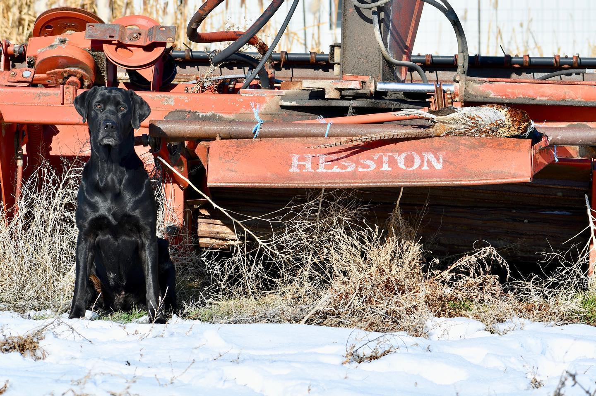

Episode 7 · June 17, 2023 · 3052
What kind of bird dog to buy?

About This Episode
In this episode we talk about the most common hunting breeds and our overall opinon of the different gun dogs along with their strengths and weaknesses. If you are looking for a new bird dog or just want to learn more, this could be a good episode for you. If you have any questions you would like covered you can email us at
Questions about the training topics in this episode? Tyce works with bird dog owners and hunters through Utah Bird Dog Training. Reach out to work with him directly.
Resources & Links
- Utah Bird Dog Training — Work directly with Tyce — professional bird dog training services in Utah.
Transcript
Full transcript for Episode 7: What kind of bird dog to buy?.
Tyce
Hey everyone. Welcome to the Bird Dog Podcast. My name is Ty Erickson and I am the host of this show. And, we're glad you joined us, today for this show and hope that we can, can share some information with you that could be beneficial to you. the topic that I wanted to discuss this evening, is, what.
Breed of dog to get if you're looking, for a bird dog, to buy for your family or yourself or whatever it may be. as a trainer, very commonly we get people that want to have us train their dog, to do. Certain aspects of hunting that the dog is not really bred to do. And I think sometimes, some people think if it's a a dog or a predator, it's gonna be able to hunt water fowler, it's gonna be able to hunt upland game and that's not always the case. There's some breeds do lend themselves to being more versatile, But they're generally strong in a certain area.
So I'm probably gonna talk about some of the just common breeds that we train and kind of talk through those and kind of their pros and cons and strengths and weaknesses. And then, you guys can kind of decide if one of 'em seems to fit your lifestyle better. Again, this, this, information I'm gonna share with you is, is my opinion. It's from years of training.
These different breeds of dogs been training full-time for 16 years now. and I've had my hands on hundreds of these different breeds, and, so I feel like I got a pretty good idea of the generalities of these breeds. Now, within each breed, there's. you know, there's exceptions, but not very often. first one let's talk about is the Labrador Retriever. one of the nation's most,, favorite breed of dog. It's a, it's a great dog. Again, labs are super smart, super kind, great to have around the house if you have kids or you, you want a dog that generally you can trust not gonna be aggressive.
The lab is a great dog. If you're a waterfowl and an upland guy, a lab is a pretty versatile breed. now they are strong, generally a, a good bread. One should be strong in the water, have real high retrieve desire, and also, able to hunt upland game. Now a lab can, can.
Compared to a pointer, you're gonna have to keep 'em in pretty good shape if you want 'em to have that endurance. When it comes to upland game, I would say not all labs are created equal when it comes to upland games. Some of 'em, have more of an athletic build. You have the American and you have more of the English style lab.
The American generally is more sleek, has more of an athletic. Build where the English tends to have those shorter legs block your head. And, I think that can affect the way they move sometimes. But I've seen both.
That actually can do pretty dang well. But I would say number one, if you wanna hunt up on game, keep your dog in real good shape, you're gonna get longer hunts out of that dog before. They reach burnout, if you're doing a lot of chucker hunting or something like that, or long day of pheasant hunting where they're really busting that brush, it really comes down to, how we keep 'em in shape and then also the, the mental strength of that dog. Some of the labs are better at Upland game than others, but I would say, they definitely can do a good job, but I would say upland game compared to a pointer, they just won't cover as much ground.
They're a closer working breed, so they're gonna work in, generally in shotgun range. They're gonna work close around you and, they're generally gonna flush that. That bird up in range so you can knock it down and, gotta choose your obedience to keep 'em in close, when that bird does come up, that you can get 'em down. Lab again, because it is a versatile, more of a versatile breed, where you can up on game and waterfowl with it, it's a great choice. let's jump over to the pointing world, the German short hair pointer, that's probably the next dog that we train.
The most, the German shore air pointer. If you want an upland dog, the German shore air pointer is pretty hard to go wrong with. Now you're not going want to hunt waterfowl with this dog. Some guys will try to, I would not recommend it.
They have a short coat. They don't want to sit still. They're bred to move. They're bred to cover ground.
They're bred to point and find birds just like their name says pointer. Their job is to find a point. Game retrieving is second. Some pointing breeds and German swire pointers in general too, retrieve better than others.
And again, just like a lab retriever, they should be good at retrieving game. I would say with the German shore pointer, they're one breed that I've seen that almost, I feel like you can almost get 'em out of. Any bloodline and they've been bred to do what they've done, been doing for so long that they, they generally turn out good in training. We've, I think we've washed maybe two out of training in 16 years, just didn't have bird drive.
But generally they have good bird drive. They point. through force fetch training, you can help 'em become better retrievers. Some of 'em, again, are better than others when it comes to retrieving, so that's something I would look at. Definitely if you are looking at getting a German short hair, I wouldn't be too much worried about the point, but I would.
Look at the parents and if you can evaluate their desire to retrieve, and both parents are strong retrievers, that's gonna make your life easier when it comes to a dog that not only points game, but also will retrieve that bird when it's shot down. If it lacks in the retrieve desire, then sometimes you're gonna have a dog that will point the bird, you shoot the bird, dog runs to the bird, makes sure it's dead, and then it takes off and goes looking for Another bird to go find for you, and you're gonna have to walk over and pick up that bird and hopefully relocate it if that dog has left it before you kind of could find out where it's at. So German Shuer Pointer, great dog. If you want an awesome upland game dog, they're a good one to go with. cons, they do have energy and most of your pointing dogs are gonna fall in this realm.
They have energy for a reason. Because they're built to cover ground. I mean, when you hunt those dogs, you get a good one. It's like they're the energizer bunny.
They just go and go and go and don't drink as much water. Let's again, we're comparing a lab right now to a short air. Labs are gonna drink. You need to pack a lot of water for 'em when you're hunting up on game, especially if it's warmer temps.
They're gonna drink and drink and drink. They are a water dog in a sense that they like the water to swim, but they also love drinking water. So plan on taking more water for 'em, keeping 'em hydrated. A short hair.
They have more of that hound build, so they're just built to cover ground, not wear out as easy, and they can run big and open up. And. you know, you can use your obedience control that, how big you want them to run. I personally like 'em in, within about a hundred yards where I can see 'em. If it's real light cover, I'll let 'em open up.
If the dog will, if I'm hunting chucker or something like that, or. You're on a big open grassland where that dog can really get out there and stretch his legs. It's pretty fun to watch him go out there and all of a sudden lock up on point for you and locate those birds. So around the house, that dog's gonna need an outlet for energy. it's gonna need really good OB obedience.
And also you're gonna kind of have to be on 'em a little more because they can get outta control a little easier and they can kind of run. Run the, run the roos in the house if you let 'em. So you have to be a good pack leader when it comes to a lot of your pointing breeds with that higher energy. Because if you don't take control of them, they're gonna just kind of take control of you and take control of the situation.
So if you find yourself being a good leader, you can draw a line in the sand and say, no, this is the way we do it. Once that dog is trained and be, Consistent and firm and also, and then build them up when they're doing what you want. you know, a short hair can be a good dog for you, especially if you get out and hunt quite a bit as an up, if, if you get out and hunt once a week or whatever, a short hair could be a good one. Or if you're an active person, you like to run a lot. I do a bunch of hiking.
You want a dog that's just gonna go, go, go. The German short hair is a good, good dog for you. If you want to hunt, waterfowl do. I would not recommend getting a German short hair, to hunt waterfowl with.
Can you take it out? Sure. You get hunt it maybe early in the season, but it's probably gonna be more of a hassle than not. Just with that short coat, the water gets cold, they don't want to sit still very bad. so.
Just kind of, those are some of the main characteristics between a lab and, a short hair, a pointing breed. in general, retrievers are better at sitting, still being patient and going from a sit position exploding out there to go pick up your duck or goose or whatever you shot down out in the marsh. And, and so that's kind of your differences there. If you are looking at a short, I have trained some short hairs that have better off switches than others. Again, look at the parents, look at the bloodline, ask the breeder, the parents, are they kind of always turned on?
Do they always have a lot of energy or do these ones kind of turn off?, I've had some short hairs that can turn off actually pretty decent. So around the home, they're actually pretty enjoyable to be around. But then I have seen plenty that have energy that does not turn off so, Again, do your research. Just did a podcast yesterday about, looking at parents, looking at bloodlines, those things.
So you could always refer back to that. But again, when you're shopping around for a puppy, don't just go get your first pure purebred. A KC registered short hair, most likely you'll have a hunting dog. But if you want some of those fine tuned characteristics, maybe more of an off switch.
Again, the retrieve you're gonna wanna look heavily at with the German short hair, those are ones you're gonna want to find, comb it a little bit more. But great dogs, if you're an upland game guy, they're gonna cover ground. And I don't know if I've ever seen one that didn't point when it came into training they all have a pretty, pretty strong point. Some points are a little better than others, some point a little further off, have a little better nose, but generally they're good up on game dog.
The next breed let's talk about is the Griffin wired haired pointer. This one seems like lately I've seen more and more of them. They are. Considered a versatile breed, but again, in the name pointer.
Okay, so th this dog is gonna excel when it comes to pointing. So they're more of an upland dog. I'm gonna say the ones I've seen lean heavier and excel better as an upland game. Bird dog.
Can they do waterfowl? Yes. But if you're comparing them to a retriever, a good golden retriever, Labrador retriever, Chesapeake Bay retriever. I think you're gonna be a little disappointed.
They just generally are not as explosive from a sit position. Or in the blind and going out there to pick up your duck. They might go out there and it might be a trot or maybe a quick run or swim decent. But there's, I see a pretty big variable when it comes to the waterfowl dog.
Some are better than others. So again, if you're looking at Griffin wired hair pointer, look at how strong the retrieve is. In this breed also look at the parents. See if they have real strong retrieved desire.
Ask 'em about water. How much do they like the water? Do they not like the water? I've seen some that do not like the water.
Most of 'em will go into the water, but if you have a dog with lower retrieved desire and the water starts getting real cold, and you knock a bird down there, that's gonna translate into a dog that does not want to get in the water. Very bad. For you. So again, if I'm looking at a Griffin wire hair pointer, I'm gonna look, I'm not gonna be as concerned about, the pointing.
I think generally most of 'em point, most of 'em have pretty good prey drive. But again, look for high retrieve desire and also, Confidence and confidence when it comes into the, water work. Look at those parents and try to find ones that have those aspects. Get video again, if you can see 'em.
Just a dog standing in water in the middle of the summer isn't necessarily a dog that's gonna get in the cold water in the fall. So if you can get videos of that dog in cold water, you can kind of see its water entry and stuff like that. That that's gonna help you out. Now something I've kind of seen with the Griffin wire hairs lately, I've seen some that seem to be more timid is an an overall breed standard, I see more timid Griffin wire hairs.
Then, I would think I would see, but maybe that's just again, part of the breed standard. I've seen some that lean more towards being gun shy or don't like loud noises. And these are usually the wire hairs that are pretty soft in nature. So you're gonna wanna really socialize your.
Griffin wire hair really good. look at the parents again. Look for confidence in the parents. If you go over there and the parents of the litter are really shy and nervous, guess what? There's a high chance those pups are gonna be that way.
We had a good friend that had a Griffin wire hair, and they socialize the heck out of their pups. They brought 'em in early. We did all this extra work, and the dogs were just scaredy cats and just nervous dogs. All the ways they grew up and even around their own pack and stuff.
So again, look heavily at the parents and the bloodlines and get videos and go and meet 'em in person and stuff like that. So look for confidence, look for high retrieve desire, confidence in water if you want a waterfowl dog. And then obviously, the point. Is generally there.
I, we have had some g Griff wires, hair wire hairs in that did not point. We put 'em on bird after bird after bird check cord flyways, and they just were flushers. They're just like, the gene was not there. I think I've only seen a couple of those, so it's not real common.
But again, with that Griffin wire, I do see a little more variable to that. they are generally a closer working breed, so they like to stick. In shotgun range. They seem to be a little more of a methodical hunter. Not super quick, just kind of, I'm out here doing my thing, I'm gonna hunt for you. can be pretty excited about it. but they're not going to generally cover the field as quick as some of your other pointing breeds, like a short hair, maybe an English point or something like that, that just have a little more of a higher gear to 'em.
The trade off is generally they're easier to have around the house. I think that's why people tend to lean towards them. They tend to have a, a nice personality, again, as a family dog that you can trust. You're not gonna get bit or anything by 'em.
They're generally. Kind natured and they have more of an off switch. But again, I think the off switch translates into the field where they're not as aggressive or have that energy or drive sometimes that you maybe want in that field. But just remember, hey, around the house, he's a pretty good natured dog and that generally translates into the field. there are pros and cons to them.
Again, consider those different things. But if you're wanting a strong waterfowl dog, it's gonna be your hit or miss kind of each dog, but evaluate the parents. All right, let's move on. Let's talk about.
Some generalities, these common breeds. This podcast may go a little longer than I was thinking, but we'll, we'll just go with it. next one, let's talk about the vla. Vilas are beautiful dogs, extremely short coats. They're, their coat, I would say, is right there with the wine runner.
And so cold temperatures, most likely that dog's gonna need to stay inside the house. In the wintertime, or you have a nice insulated dog house, something like that, that they can get out of the temperatures with those short coats. The vsla, you definitely want to get hunting lines. I see more inconsistencies with that breed.
If they do not come out of proven strong hunting parents, there's a chance the dog, might have some quirkyness to its personality. If they're more out of like show lines are not bred real well generations of athletes, then you're probably gonna get some dogs that. Tend to be more nervous, maybe don't point as strong, aren't into birds as much. We've seen that with the VLAs.
They just don't really have bird drive. You put 'em on dead birds, live birds, and they just don't really care. and then we've seen 'em completely on the other side of the spectrum. Beautiful points. Very birdy, pretty dang good retrieved desire.
Nice point. But those ones are generally coming from. Proven pointing lines. So the v I've seen 'em different energy levels.
I'd say they have more of an off switch than, than like a German shore air pointer. We're gonna compare that. A lot of 'em probably to the German shore air pointer cause it's very common. and so they can turn it off more. They might be a little easier to have around the house.
They're generally softer as a breed overall. So when you're running through obedience, They tend not to hold themselves up as strong, like as short hair as you're working through pressure or training or new things. They, they generally can take that better. They can, they have a little more of a backbone where visionless tend to melt under that, a little bit more.
So you gotta be more patient with them. When it comes to training. You can't be as forceful. you have to be a little softer, more repetition. Cheerlead him along more, more patient.
So if it, if you are a guy that has some patience and you can develop a nice dog, then, a VSLA might be for you. If you don't have patience, than maybe you want to go with something else. But V shreds tend to sometimes kind of melt under pressure. They'll kind of get slinky when you tell 'em sit.
They'll kind of like roll over, almost like a wet noodle. They're just kinda, oh, woe is me. So you gotta just cheerlead them along, be more patient with them. But again, within that breed, I've seen dogs, some that have more of a backbone and then some that are extremely soft.
So again, I'm gonna revert back to this. Look at the parents heavily. Look at the bloodlines, cuz that pup's gonna be like one of the parents. Or a combination of the parents.
If you have two beautiful parents, love their personalities, lots of confidence. Great retrievers, great point, great personality. Then get a pup from 'em. next breed. Let's go with, American Brittany, spaniel.
So Brittany's are, they're great dogs. They're small, which makes it kind of nice to have 'em around the house. they do like to cover ground, so that some of 'em will range bigger than others and as a breed they tend to be softer, I would say as gen in general. Just thinking about pointers in general, some of them can be, I'd say overall they can be a softer, Softer breed when it comes to training and pressure and stuff like that. When they're doing their thing and they're upland field and, and they're out hunting, upland game, you don't have much control on them.
They're beautiful to watch. They're fun to watch. It's fun to watch 'em flow through the grass, lock up on those birds. But anyhow, so the Brittany, they vary in size.
There's really small ones to bigger ones. A larger animal's probably gonna have an easier time retrieving bigger birds like pheasants or forest grouse, like bluegrass, something like that where a smaller one may struggle a little bit. you know, on they're retrieving. But at the same time, I've seen little ones that are gritty, they are mentally tough, and they will retrieve. Bigger birds, they'll retrieve birds are half their size and then you can have a bigger one that's mentally not very tough and they just won't even want to pick up that bird or it's too intimidating.
And so again, look at the parents. With the Brittany's, some are great retrievers and some do not like to retrieve. Look for retrievability. I think all the Brittany's I've trained have always pointed.
I don't recall ever just a Brittany that would flush, so the pointing gene is pretty strong into them. So I wouldn't be as worried about the point, but I would, Look at prey drive and retrieve drive. Generally retrieve drive transfers over into prey drive. If you have a dog that's really aggressive after retrieving and getting things and chasing things, that's gonna translate into focus on point or focus in birds or focus in the field hunting and looking for birds.
I would look strongly retrieve, don't plan on waterfowl hunting with, again, a vsla, a Brittany, or. If you're gonna h waterfowl with any of 'em and you, the German Shore Air pointers is probably gonna do the best out of those three breeds. But again, get yourself a retriever. I would recommend if you're gonna help waterfowl, or worst case scenario, you could go, the Griffin will do waterfowl, but just have maybe lower expectations when it comes to, how great that dog, how fast and how hard it's gonna hit the water and charge out there for your ducks some of you may disagree with me, you may have a Griffin that you feel is awesome, but generally you've put 'em up against a hard charging retriever and the retriever's gonna win in the water, but you can still hunt that dog.
So let's go back to the Brittany again. They're great dogs, cool little dogs they can make a good family dog. They can have a little more of an off switch. Some of them, but then some of 'em do have a lot of energy.
So you're gonna want to have good obedience and good control on 'em. Cuz quite often we get 'em in owners. Just say, Hey, this dog's just taken off all the time. They want to go explore, they want to do what they're bred to do and that's Hunt.
Cover ground and point birds. French Britney, we'll talk about them for a minute. They're not, they're definitely not as common as, as the American Britney, but French Britney is what I've seen. They, they're a great little dog too. good point. similar to the American Britney, but I would say the French generally seem to have a little better of a natural retrieve to 'em.
But they are going to be, Somewhat equal in, hunting ability when it comes to the American Britney. the wine runner, let's talk about the wine runner. wine runners are, are, are cool dogs. they seem to, from what I've seen, again, all these things are what I've seen and what I've, my opinions. so you take 'em with a grain of salt or how would you have it? But the wine runner in general they tend to mature mentally slower than other breeds. They just seem kind of goofy and a little dopey when they're younger and it takes 'em a while to mature. The good ones I would, again, sway heavily, especially on this breed, is make sure they come from solid generations of hunting lines and proven parents.
Do not just go get up here red, otherwise you're gonna be playing Russian roulette on it. It's just. We've had a lot. We see a lot more of these that don't have good prey drive, don't have good point.
Just really aren't into the game. And so if you want to play with that breed, look at the parents, especially look at generations ideally of solid hunting lines. And we've had some really nice ones in training that point, hard cover, ground hard. Generally they retrieve pretty good.
As. A breed. The ones we've seen, they generally like to retrieve, like to have stuff in their mouth and do pretty well when it comes to retrieving. But, the hunting is generally where they're lacking prey, drive hunting and pointing. look heavily towards that.
If you're looking at the, the wine runner, Another breed we can talk about is the, the tir, the German Wirehaired pointer. they look, tend to look a lot like the Griffin Wirehaired, but they do act different. The German Wirehaired, they tend to be a little more gritty. They can't, they almost have like a little more edge to 'em. They seem to.
Just kind of because of that grit. They seem to be a little better as a waterfowl dog. They can be a little more aggressive when it comes to water. They tend to range bigger, hunt a little bigger, cover more ground where the Griffin tends to stay in close.
They can struggle around families a little more. I've had, we've had instances where they can be a little aggressive towards people, outside of their pack or strangers or neighbors. So when you're looking at getting one, ask heavily on the parents about personalities, if they're aggressive at all, or tend to, you tend to feel that way when you look at the parents. But they tend to be strong when it comes to prey drive.
I don't know if I've ever seen any gun issues, gun shy issues with them. Compared to where the Griffins, we have seen gun shy issues just with that timidness that the, the Griffins sometimes leans towards, so, the draw fire, the germ wire hair, you can look at size. I've seen some that are really big and some are small. Generally, again, they're gonna be stronger when it comes to upline game.
They also, people can like, do blood tracking with them, stuff like that. They have. Different tests where they like retrieve a fo a dead fox and stuff like that. So they just tend to be a little more, a little more gritty.
So they definitely are a different breed, but they can be a good dog, just kind of, if you have young kids Just find out. Just ask the breeder heavily, like, Hey, these parents, are they aggressive or they gonna be good around my kids? You know, go meet the dogs. If they act aggressive towards you, then there's a chance they're gonna be maybe aggressive as they get older.
So again, look at those parents heavily. Let's talk about the next breed is, setters, English setters, luelle and setters. great dogs. they. Look beautiful on point. They have longer coats, so if you hunt a lot of areas down around lakes there's cockers or stuff like that.
Just be prepared to do more grooming, getting bur out. 'em, if you're a chucker guy and you're getting up on those grassy slopes, or grassy areas. The setters are great dogs. They tend to point, well, they have, they tend to be, I would say they're one of the breeds that point the strongest, like off a distance from the bird as I've seen. I guess maybe lending towards their noses.
But they are soft in nature. So when you're running through obedience, they're gonna kind of tend to melt a little bit like your vsla. They tend to have a little less backbone to 'em. And again, I've seen some that are extremely soft and some that actually have a little more of a backbone.
So again, when you're looking at parents, Of the pups you're looking at, just kind of judge 'em. Does the dogs seem pretty confident? Do they seem kind of like softies again? Cause your pups are gonna be like them, but they generally like to go out and get the bird and retrieve pretty good.
They can be a little hard mouth. So sometimes the force fetch training or the trained retrieve can help clean that up. But there's something nostalgic or classy about the setters there. Very fun to watch.
They have that nice high tail that looks like a flag. They could be pretty cool dogs. Cool thing about a setter too, I would say. They can have a little more of an off switch.
I think the ELLs lend themself that way a little more. The English seem to be a little less off switch. Again, these are my observations, but. Again, look at those parents and try to get a pup that matches kind of the personalities of those. good dogs, again, they're an upland breed.
I would not plan on hunting waterfowl with them. The next breed we're gonna talk about is the poodle pointer. getting more poodle pointers in training, lately than we have. poodle pointers are, I would say they're more, they're gonna be pr, they're a pretty versatile dog. they are strong, they have strong prey drive. All the ones I've ever trained have pointed. They take a little more work to develop the point.
The ones that I've worked with, they just seem like they, because they have high retrieve drive, they want to kind of go in and get the game and go retrieve the game or go after the bird. And so sometimes it takes a little more work to teach 'em, Hey, you gotta point the bird. if you don't develop the point, you might see more flushing possibly from that breed. they tend to be a closer. Pointing breed, generally, but the point can be developed. The point is, is always been there, the ones I've worked with, but they do have high prey drive generally don't have issues with guns or loud noises with the poodle pointer. when it comes to water, they generally actually are pretty good in the water. within the poodle pointers though, you have a lot of them that have.
Short coats. And then you have ones that have a lot of long coats. They just almost look like a Griffin wire hair or wire hair of some sort. And then you have some that look like they're a German short air pointer with a beard.
So there's, the coats really vary on those. So probably if you have a longer coat, they may do a little better. But I think because they're kind of, they seem to be a little more gritty mentally. And I'm saying this generally, we've had some that are softer.
In nature too, and not as gritty. But I would say generally they're pretty gritty. The males tend to be that way. The females tend to be softer, which is natural, but they tend to do pretty good in the water. they would be one I would consider as a versatile breed.
If you wanna hunt waterfowl, end upland game they're gonna be stronger still, generally as an upland. Bird dog. But if you wanna hunt waterfowl with them, definitely look at the parents, look at the desire again for the water and for the retrieve. they can have a decent amount of energy and have a little more to turn off. But then I've also seen ones actually have a pretty good off switch.
So look to the breeding to decide which one you're gonna get out of them. I haven't seen any aggression. And those dogs so they can, I think be a nice family dog. They are less common.
So if you're looking to get one, you're probably gonna have to, really do your research. Probably gonna be on a waiting list for a year or so Again, some of the ones that have longer coats, you're gonna have more maintenance on 'em when it comes to burge when you're hunting up one game, where the shorter ones, that's gonna come off a little easier. let's, talk about a breed. I actually, we do some of the breeding on, and I've bred. Them for years, and that's the pointing Labrador gonna kind of come back around on the versatile breed.
The pointing lab has been really developed the last 30 or so years where they've actually found these labs that naturally pointed and then they've bred 'em from generation to generation to try to develop the point, encourage the point, but also, keep the good retrieving. Behaviors that a good retriever should have. So I would say a pointing lab is about as versatile as a pointing dog as you can get. A pointing lab and a hunt's Waterfowl should act like any other good filled bred lab.
They're gonna have high retrieved desire. Love the water, gonna be very intense and focused. I would say the pointing lab sometimes can even be a little more focused. Just because I think that transfers into a point, there can be a large variation when it comes to the point.
I feel like the dogs, they almost fight within themselves. They're kinda like, I really love to retrieve, but I have this point thing going on. And some of 'em just naturally are gonna point better than others. Some of them you have to develop that point, and bring that out stronger.
I would say in general, you're gonna have to plan on doing that. It's gonna take longer to wo train the dog to put 'em on a lot of birds. Don't shoot pointed of birds. Really try to encourage that point before you start killing birds over that dog.
Now. And that's if you're really wanting as strong as point as you can in that pointing lab, if you just kind of let the dog do whatever it does. Good chance he's gonna go out there, lock up on that bird for two, three seconds, and then jump in and flush it. So if you're like, that's, I, that's good enough for me, then you could just kind of let it do whatever it does naturally.
But I've seen some pointing labs. It'll, they'll point just as strong as any pointing breed you've ever seen, and they'll hold the point beautifully, super long. Super intense point off a good distance, but then I've seen some that have the point, but it's kinda like I It's kind of, they'd rather just flush. And some of 'em, if you just start shooting whatever, even if you develop the point, the point could disappear and the dog could just be a flusher.
Or again, you're gonna have some some flash points where it points for a couple seconds and then jumps in. Or you have some, I've seen it go the other way as they get mature and the birds start holding tight. The point gets generally stronger. Generally that's the case.
It seems like the pointing labs, they get older and more mature and they kind of slow down, kind of get out of the puppy brain. They tend to start pointing more the more you hunt 'em on Upland game. So again, they're just really a Labrador that points. So if you like, oh, that'd be cool.
That'd be a fun bonus. Look heavily at the pointing Labrador. There's the American Pointing Lab Association, the A P L A. And I've been very involved with that.
I've titled Dogs all through, all through the, those titles that the American Pointing Lab Association has. You have a certified advanced Master Pointer retriever and Grand Master Pointer retriever titles all the way up to a four and a half times Grandmaster Pointer retriever. Really cool club, really good people. And the pointing lab can be really fun on their website.
American pointing lab.com, I believe is still the website. There's a bunch of different breeders on there that you can go, that they really focus on the pointing lab. Again, some people say this is a pointing lab, trying to breed it, make more money. But that being said, ask for videos of the parents pointing pictures at the very least so you can see the dog locked up.
But I would prefer videos cuz there's sometimes a dog can even just get a stance when it's standing. There almost looks like it's pointing, but it's not really an intense point. So I would look, look at videos or worst case scenario. Or the next best thing is gonna look at titles.
The titles, the certified level is going to certify that that dog has a natural point. That's what the A P L A is all about, is bettering the breed, making better, pointing labs. And so if you have parents that are, at least at the certified level, you're gonna know that, the parents both have natural points, look at that. If they have higher, titles than that, that's just basically extra training and some, Some intelligence also, cuz you're starting to get into handling and, developing the memory.
Dogs are running double retrieves and stuff like that. So pointing lab is a great, breed. next one we're gonna, we're kind of fading back into the retrievers. Start off at the lab. Let's look at the golden Retriever.
We actually breed hunting golden retrievers. If you're curious, our website's filled bread, golden retrievers.com and they're a beautiful dog, obviously dark red, golden color. We do have one that's in our breeding program that's lighter, kind of that dead grass, co dead grass color. But a lot of people do seem like they like the darker colors.
But. Great family dog, super intelligent. They often hear that, oh, the dog has that golden nose. They're known to have a really strong, good nose that can smell good and, really higher retrieve drive.
I would say generally our goldens, I've seen tend to enjoy having stuff in their mouth even more than the Labrador. Labradors do. They just tend to. Be very mouthy.
Love to pack around stuff. So this can be a trial. If you have a puppy inside your house, be prepared. They're gonna grab every shoe, everything they can get in their mouth, and they're gonna take it wherever they want to take it.
They are a golden retriever, so they should be good at retrieving. And so just be prepared for that. Do not leave them unattended when they're a puppy or any of retrievers or really any dog in any sense, cuz there's a chance they might get into trouble for you. Golden retrievers tend to have a longer coat than a lab.
The filled breaded goldens, which we breed generally have kind of a mid-level length coat where if you get more into your show type goldens or your English creams, those ones they tend to have a longer flow your coat. and it seems like the show goldens, they tend to lean towards, They tend to be a little lighter in color. The brs are generally your darker red colors, more athletic build. They're gonna have a higher energy again because they like to retrieve and have that higher energy that transfers over into going and getting those birds in the water or cold weather or whatever it may be. If you're looking at a golden, again, look, a high retrieve drive. look at confidence. goldens can be, I call 'em, they can be a little more squirrely as a breed. some of them,, just have kind of a little, a little softer nature to 'em, but then they got this energy kind of going on. but I would say when our dogs, a lot of 'em are similar to.
Labs and trainability. I say they're gonna be, they're gonna be pretty close. They're a retrieving breed, so the retrievers seem to be a little closer together than some of your pointing breeds. great dogs great family dogs. Generally they're gonna be very kind and gentle and that's why you see 'em as service dogs and stuff like that.
That's a little bit about the golden retriever. Very trainable also, next one I would say is the Chesapeake Bay Retriever. We don't get as many as these in training, but we've trained plenty of them. They're known to be strong-willed, pretty independent dogs.
But then we've trained many of 'em that are great dogs. They, again, we're gonna kind of bounce 'em off the Labrador just cuz they're so common and, and just kinda almost that. Middle ground, but the chesses, they're known to be able withstand. A lot of chess guys say they will withstand colder temperatures better than a Labrador.
They have kind of a tighter coat to 'em. Then labs. And maybe that lends some truth to that. But I've seen, I, I don't know.
I've seen some labs, I think, and hunted them in super cold temperatures. And Jesse's, they're the same. And I don't know for sure if they would. Apples.
Apples, they're definitely gonna do better in cold water. I think it kind of comes down to the mentality of the individual dog. as I've seen some labs that don't like cold water as much, and I've seen some chests in that same. Boat and then I've seen some that don't give a rip. So again, it's gonna kind of come down to high retrieve desires generally where that transfers over when it comes to, those retrievers.
So I would say those are the three main retrievers are gonna be your golden retrievers, your Labrador retrievers, and then your Chesapeake Bay Retrievers.
I probably won't, I'll probably start wrapping this up. this, this podcast, just cuz I could go on to a lot of the other breeds. Again, there's, we live in the wonderful world of the web and so there's a lot of information on, generalities about breeds and stuff like that. So if you're looking at a rarer breed, maybe like a muster lander or. an Italian broco or, I don't know. They're all these different breeds that are out there. again, they're gonna be less common.
Your breeding pool's gonna be smaller and just do your research. Again, look heavily at the parents, if you like the parents and what they're, they're doing and showing you. Then that dog's gonna generally be like that. Maybe one last one.
We'll touch base on is the Springer Spaniel. Springer Spaniels are really cool dogs. they generally have high retrieved desire. They're a flushing breed, so they're, again, they spring springer spaniel, so they like to spring into the air after the bird or have a strong flush. they can be great family dogs. they can have a little more energy, but also they can turn it off. Depending on the breed pretty well. we don't see as many springers I actually thought we would see over the years.
I actually grew up with Springers when I was a young kid. They were kind of actually outta control cuz we didn't get any training on 'em when I was little. And this was when I was six or seven. I didn't know anything either., my dad didn't put the time into 'em.
They probably would've been great bird dogs if they'd had training. So yeah, they, good retrieved desire, good flushing dog, keep 'em in range and they generally get in the cover. Good. And, good family dogs.
I don't think I've ever really seen any aggression, you that, so again, we're looking at purebreds. If you're dealing with. you know, mixed breeds, there's gonna be a lot of variables. There's no kind of guarantee. the last one I'll talk about cuz they're so common are these are our poodle crosses that we're seeing a lot of, a lot of these doodles, the bernadoodle, the Labradoodle, the golden doodle, whatever doodle there are, some people. Get them because of the hypoallergenic, traits where they have more of a hair and lots of times they're two, three generation doodles, so they actually are almost becoming more of a full poodle.
And so there's also the standard poodle, and we'll kind of just put it in the mix with these because they're, the doodles are part poodle. So, Poodles in general. we're just gonna talk about the poodle and, and then kind of go from there. But the poodles, we get a handful of 'em in for hunting training. they tend to be very loyal to their pack. They tend to have a hard time transitioning when they come into training cuz they're just, they're very attached to their owners.
So it takes 'em longer generally to. Come around and to trust new people. And so if you want a dog that's, very loyal,, the poodle can be that way. They tend to be more nervous though. we've heard for a long time.
Oh, hunting dogs all came from poodles or the poodle used to be a good hunting dog, but that was hundreds of years ago. And a lot of times the poodles have not been bred. To continue those good hunting abilities, they've been bred to just be a pet. So maybe the retrieved desire or the ability, just the hunting, innate hunting abilities of aggression on retrieves or birds can not be there.
So again, if you're looking at a standard poodle, Look heavily at the parents, get 'em outta strong hunting lines. I know there was a poodle that was on Duck Dynasty and I think everyone's like, man, look, that poodle S was hunting it or something like that. And I think a lot of, people thought, oh, poodle makes a great hunting dog. Generally I would say I don't see as many good hunting ones, just to be really honest. when it comes to a poodle, they run out and retrieve, they then generally go out pretty good at a retrieve, but then they come back kind of a prey, slower speed.
So they're not gonna be a real flashy dog. They have that leaner build to 'em. so the ones we've had in training, I haven't had any that I'm like, wow, that's amazing, but. I'm always open and hopefully one day I'm gonna see one that I'm like, wow, that's amazing. So when it comes to poodle crosses,, you're gonna have, a lot of variables to that because you might have one that gets more maybe a., poodle has been bred to a filled, bred golden retriever, and that golden retriever has a lot of good natural abilities, very good hunting dog, and you're breed to a poodle in that one.
Maybe a pup could have a little more of that retrieving gene in it and is actually a pretty decent dog. But then you could have one that's bred to a show golden, which they tend to be calmer personalities, great family dogs, but they tend to almost act a little bit lazy. they're just bred to be that way. And so if you get a poodle that's bred too. One of those, then you're not gonna generally have a good hunting dog.
So if you're looking at a poodle cross because you're allergic to fur, and your work cut out for you. again, look at the mom, the dad, look at their abilities and if a good combination of them you think will produce a good dog. Then, then go for it and give it a try. I would say, the doodles in general, you're probably gonna want to go with like a Labrador or a Labradoodle golden doodle if you're gonna go that realm. a higher retrieved desired dog, bernadoodle, stuff like that. Burmese mountain dogs that are not bread for retrieving and hunting. at least birds and stuff like that.
You, you're gonna have more. Variable to that. I would say the ones we've trained in general do better when it comes to upland game. less control on 'em. They're not generally as explosive from a sit position when it comes to waterfowl.
They don't like the water as much. They're just not as aggressive nature, and, and I feel like poodles that way are not real aggressive. And so you kind of see that and aggressive and just like mentally tough and the water's cold and there's ice floating down and the, the poodles or the doodle crosses seem to just kinda. Oh, that looks a little rough out there.
That looks a little cold and they're gonna balk at that more. but if you're hunting up one game and there's no water, and the dog's out hunting around flushing, birds having a good time. They seem to do pretty decent. And we've had some that actually do pretty, pretty good. And,again they're gonna the doodle, if you're hunting up one game and that's what you plan to hunt with them, then they're gonna act kind of that retriever type personality.
Generally they're gonna hunt closer range, kind of a average speed. there's a lot of variables to the crosses, so, You can kind of take that with a grain of salt. But anyhow, I think that's kind of a, general observation of some of the most common breeds. There might be some I'm missing, I'm trying to think off the top of my head. Sometimes, when you're doing these podcasts, things just kind of blend together.
So if you have any questions on a certain breed, feel free to reach out. I'll give you my opinion on what I've seen and what I think. Again, there's, these are generalities I've seen within each breeds good dogs and not as good at dogs and a lot of about average dogs. they're all cool and unique., I've seen. Dogs in each of the different breeds that I was just, man, I would love to have one of those.
You know, they're just really cool dogs. do your homework and try to get one of those. have a great night and thanks for listening in.
About the Host
Tyce Erickson
Tyce Erickson is a professional bird dog trainer and the owner of Utah Bird Dog Training in Utah. For nearly two decades he has worked with pointing dogs, retrievers, and family hunting dogs — helping owners build dogs that are capable and enjoyable in the field. The Bird Dog Podcast is an extension of that work: honest conversations on training, hunting, breeding, and everything that goes into a life spent working dogs.
More About Tyce